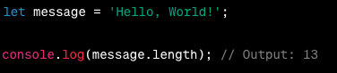
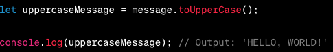

sting methods are function that can be called on string values perform various operations and manipulation on string.
length return the number of characters in a string.

by using the length property of string. we get the total number of characters in the string (the total number of characters include spaces used as well)
toUpperCase: convert the string inot uppercase.

toLowerCase: convert the string into lowercase.
there are more sting methods such charAt, concat, indexof, substring, split, replace, trim, startWith, endWith.